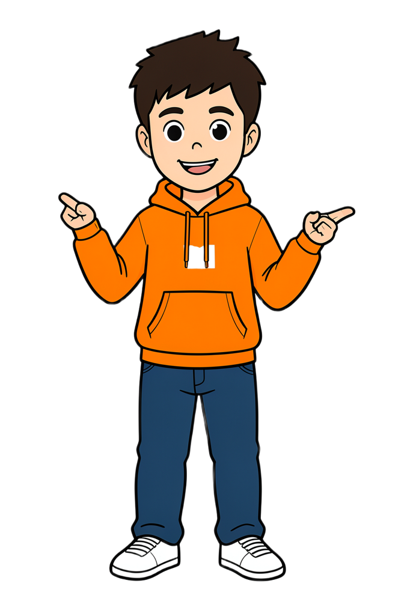

RIPASSO
Per cominciare
Il nome è la parte del discorso che conosci meglio: è stata una delle prime parole che hai imparato da piccolo. Vediamo quanto ricordi.
1●Aiuta Luce: riscrivi la sua riga di «Nomi, cose, città» con parole giuste che iniziano per C.
| nome di persona | cosa | città | animale |
|---|---|---|---|
2●Tocca o cerchia tutti i nomi.
✎CFC-18
- La mamma di Giulia prepara le arancine per la festa.
- Un gatto nero dorme sul tetto della chiesa.
- Luce ha paura del temporale ma ama la neve del vulcano.
risposte esatte / 12
3●●Maiuscola o minuscola? Scegli la forma giusta.
✎CFC-19
- Il fiume (Alcantara / alcantara) è freddo.
- Mio zio fa il (Pescatore / pescatore).
- In estate andiamo a (Siracusa / siracusa).
- Il mio (Cane / cane) si chiama (Luce / luce).
- Ogni (Lunedì / lunedì) ho italiano.
- Il (Mar Ionio / mar ionio) bagna Taormina.
risposte esatte / 7

Luce«Crocchette» è un animale: io le mangio sempre!
VladMangiarle non le fa diventare animali! «Crocchette» è un nome di cosa. Un animale con la C è… il cane!

2 · Il nome18